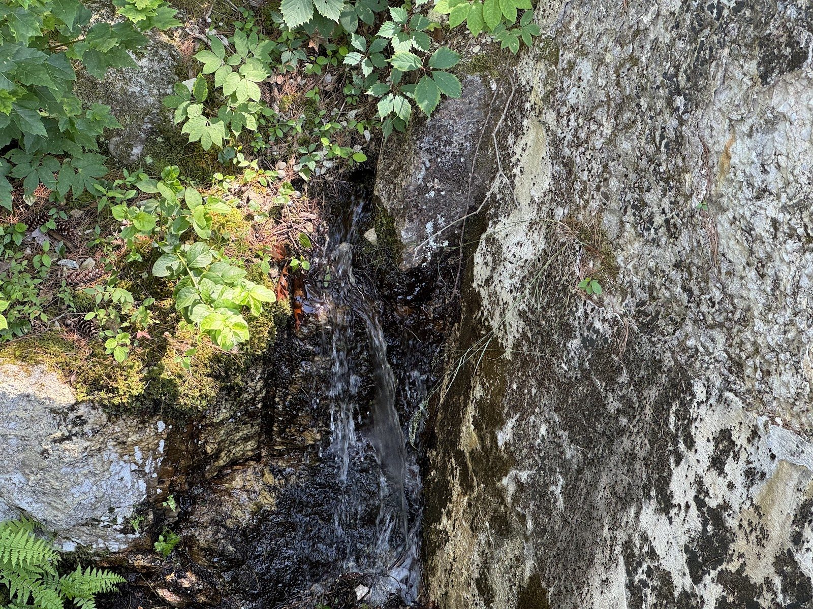
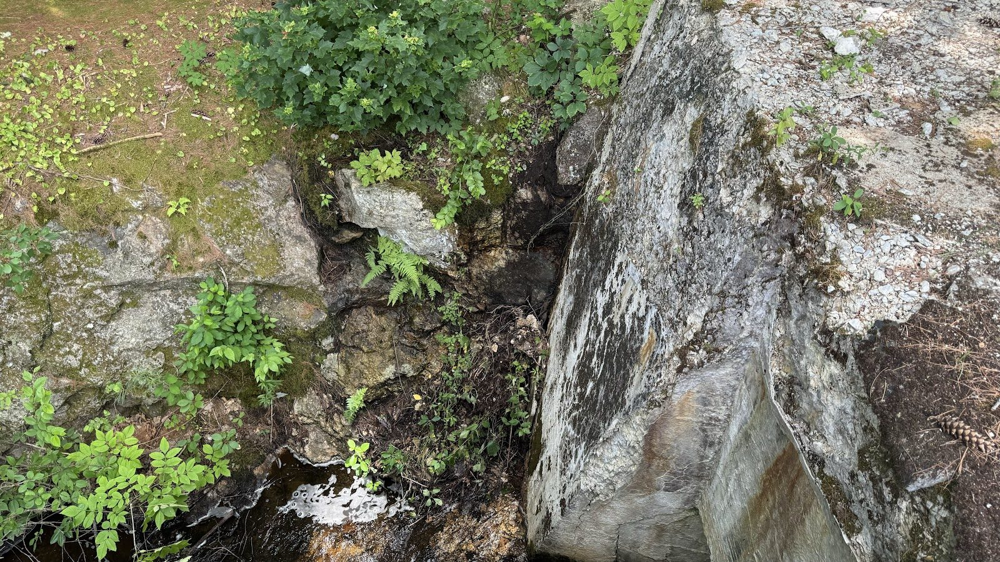
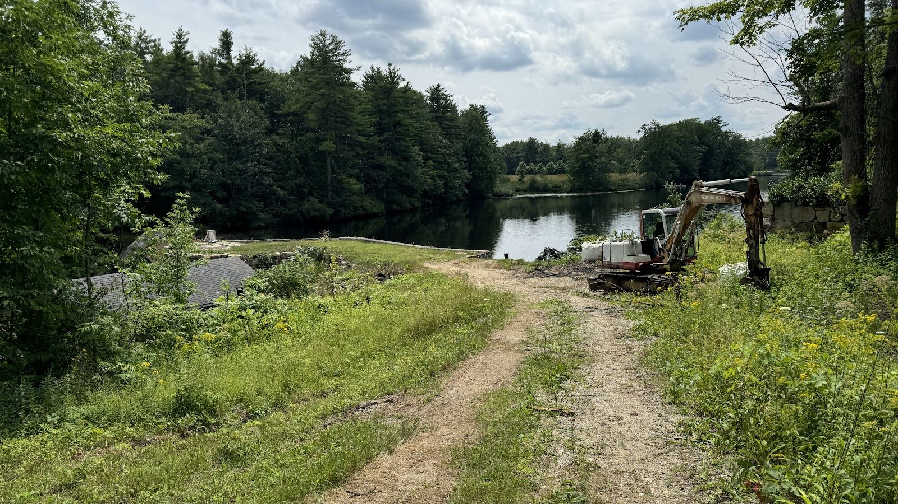
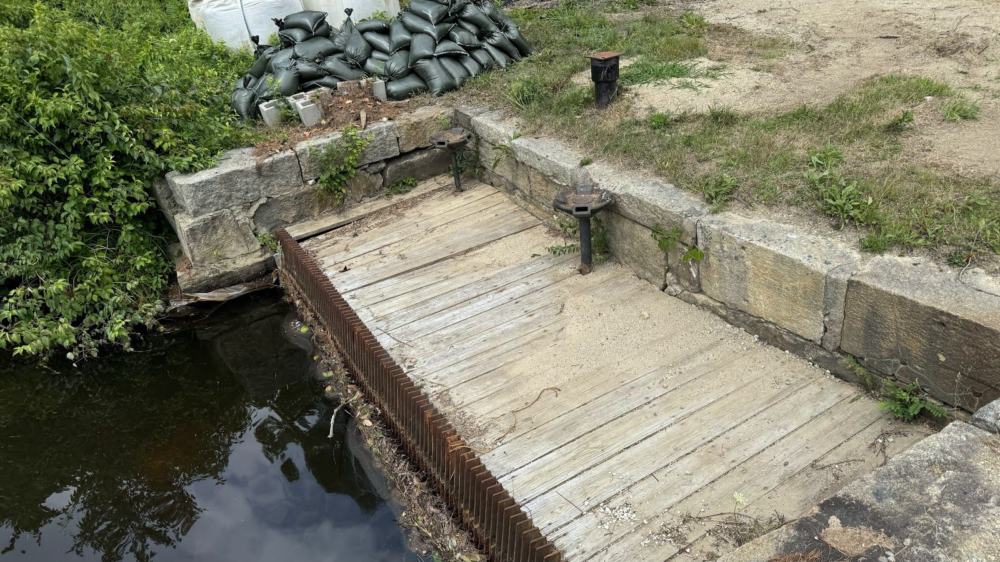
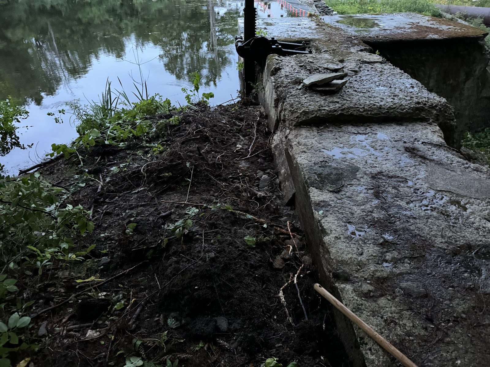
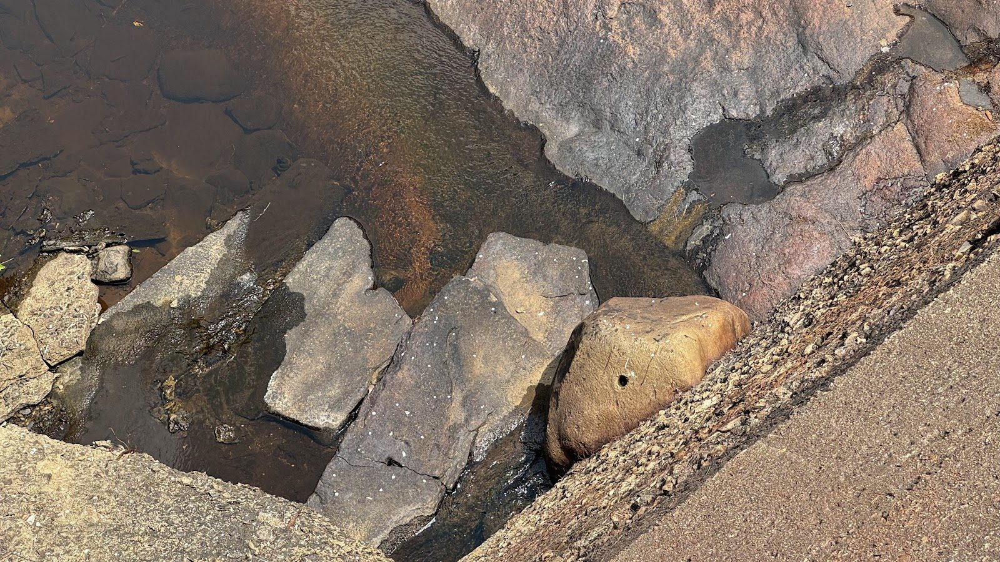
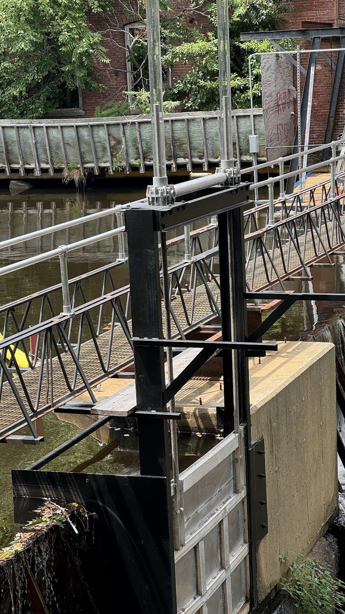
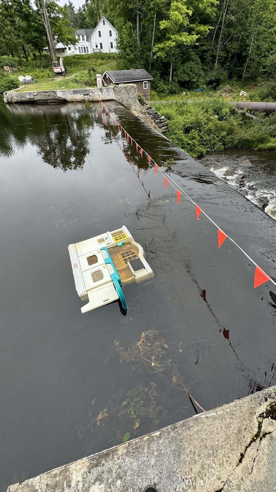

Drawdown No. 1: Addressing the Abutment Leak

The pond is going down.
Over the summer, the leak at the dam's left abutment graduated from "concern" to "priority." Water finding a path around or through an abutment is not something you watch and hope about — it's something you fix. The fix requires working at the base of the dam, and that requires lowering the pond.







We presented the plan at the New Ipswich Selectmen's meeting on August 6th, with notice published in the Monadnock Ledger-Transcript, and began the drawdown on August 7th. Waterloom Pond will come down slowly and in a controlled manner over the coming weeks — slow enough to protect the pond's inhabitants downstream and the dam itself.
For neighbors of the pond: this is temporary, it's deliberate, and it's being done in coordination with the appropriate state agencies. A lower pond this fall is the price of a sound dam for the next century.
For everyone else, a drained pond is a rare sight. As the water recedes, we're seeing the dam's underwater face for the first time in generations — along with a fair amount of history that's been resting on the pond bottom. We're documenting everything.
The repair plan itself is straightforward concrete work: a new reinforced concrete abutment poured directly in front of the existing one, sealing the leak path and buttressing the original structure. Formwork and pours begin as soon as the water is low enough to work safely.